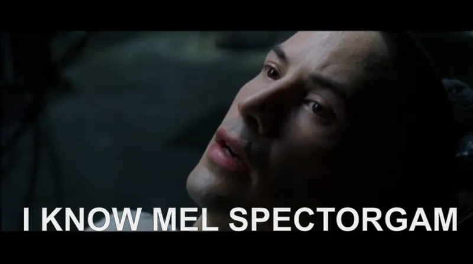
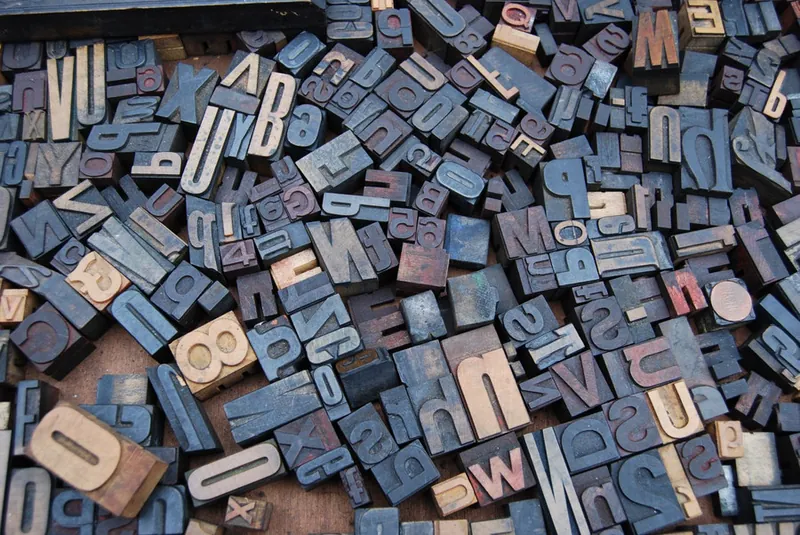
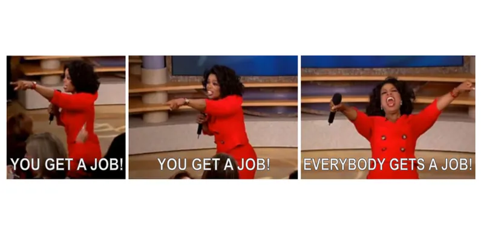

Hi, my name is
Dalya Gartzman.דליה גרצמן
Biotech Entrepreneur, AI expert, Mathematician.
Selected Tech Blog Posts

Getting to Know the Mel Spectrogram

Technical Communication
Or: 6 Principles for a Winning Technical Talk or Blog Post. And Also: Why Should You?

Exploration, Personalization, Connection.
My Method for Finding a Great Job
Selected Tech Talks
Everyone can Data! – A Practical Data Science Intro
TeMS: 17 Lines of Code That Got Me My Dream Job
Personal Branding? Professional Karma!
Selected GitHub Projects
Sphinx185
A Sphinx documentation helper, using the solution of Problem 185 from Project Euler as a test case.
Jupyter NotebookPyGraphicsGui
A "CookieCutter" for a Pythonic GUI with custom graphics – clone it to jump-start your project and learn how to integrate ModernGL and Tkinter.
PythonCodeSnippetsForPosterity
My dream is that each one of these code snippets will become a blog post. So let’s take this dream one snippet at a time :)
Jupyter NotebookWalking My Path (הולכת בדרכי)
Building in public my first startup in digital health – sharing my journey and interviewing early stage founders.
The Pantheon Series (פינת הפנתאון)
A weekly professional-development series I founded and ran at Baot, Israel's largest community of senior women in software engineering. Each post shares a content recommendation, handpicked by me or by fellow Baot members, that could help women (and everyone) in tech become more successful – and happier – professionals. Together, the posts form our "Pantheon" of what it means to be a woman in tech.


FemTech
Snapshots from my first startup in the intersection of B2B digital health and women's health.
My BioTech Culture
After a decade of mastering math and AI, I ventured into BioTech. My BioTech Culture is a collection of content I consume to help my techy brain cells grow outside their natural environment.
About Me
Hi, my name is Dalya Gartzman.
I am a Biotech Entrepreneur, AI expert, and Mathematician.
Wanna talk? I'm here: